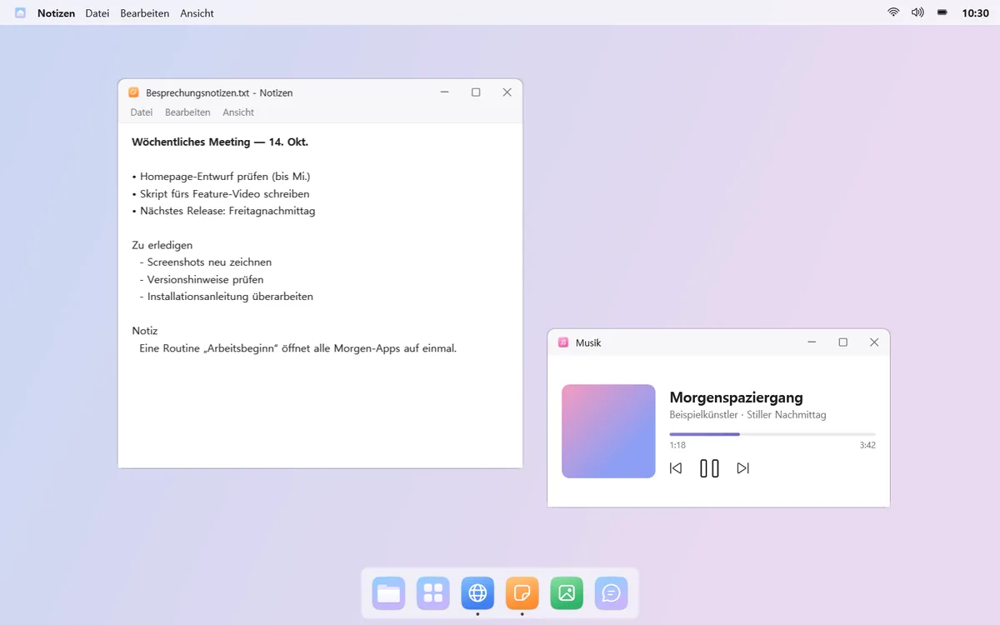
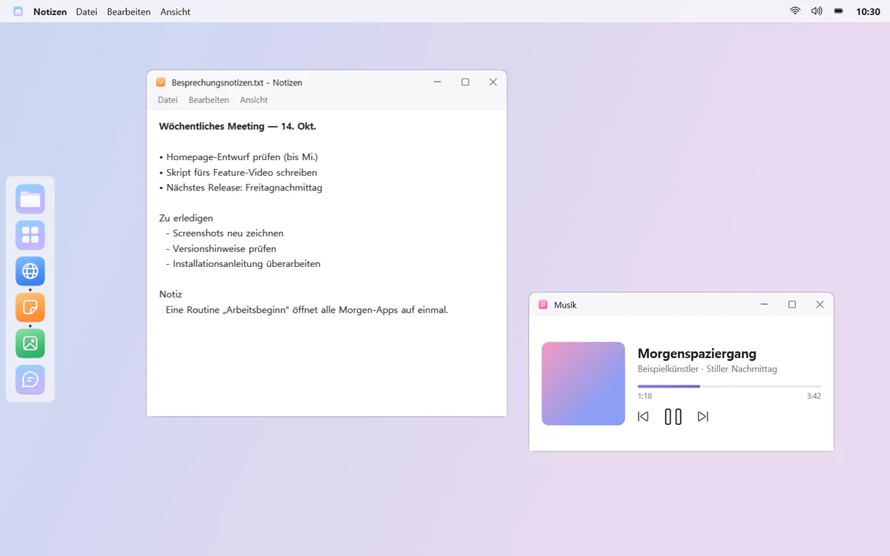
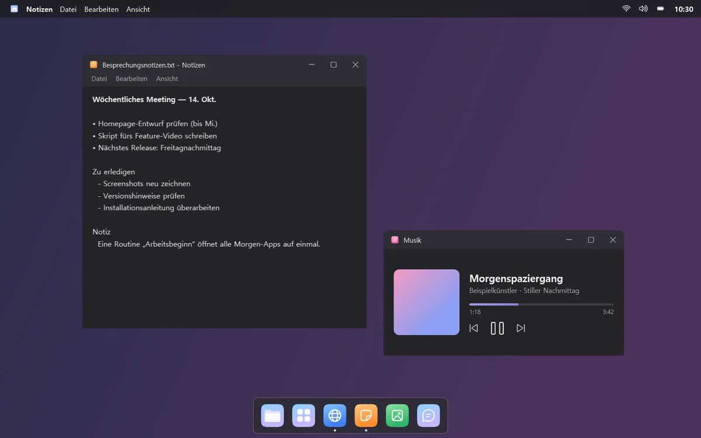
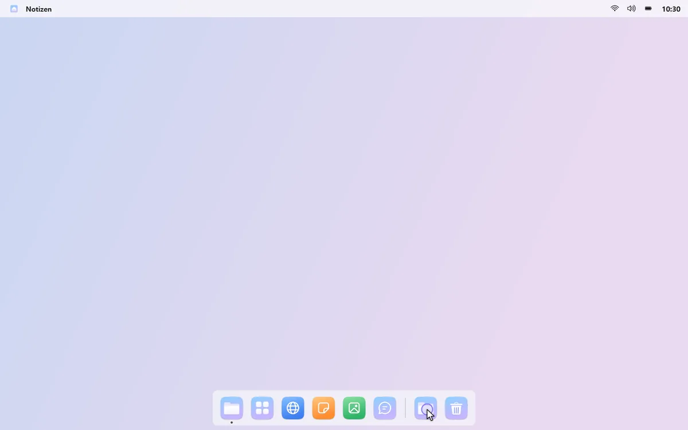
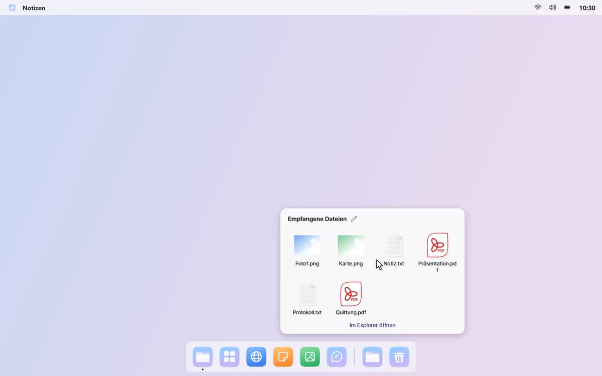
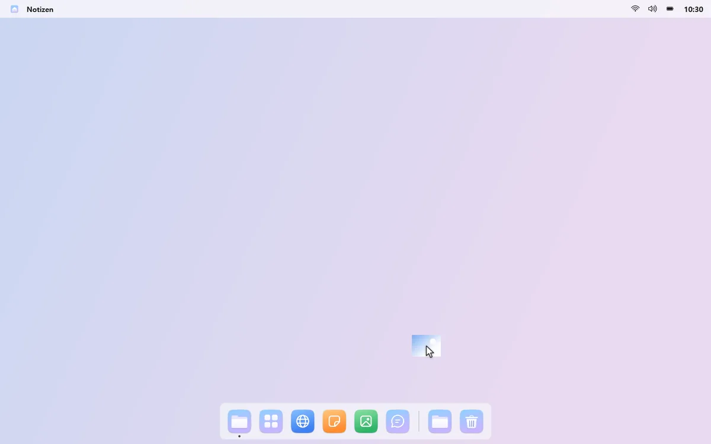
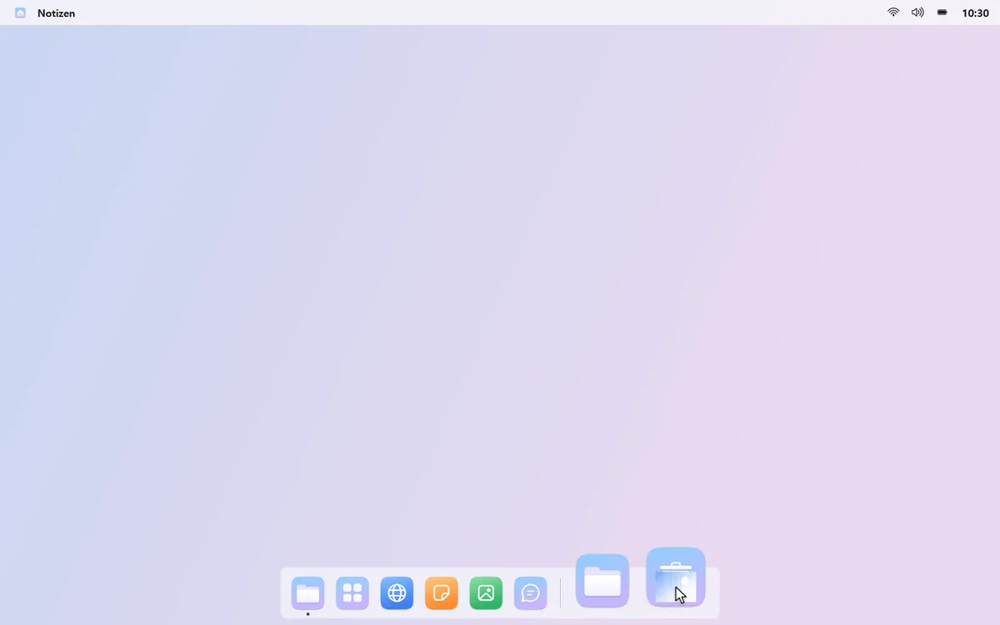
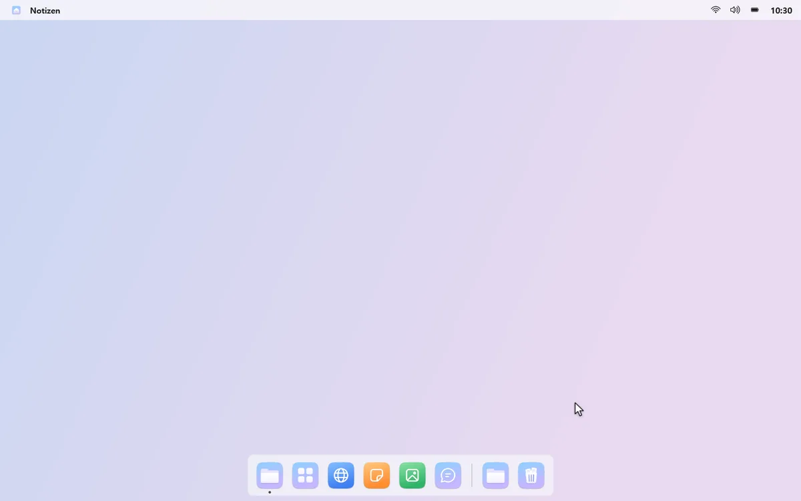
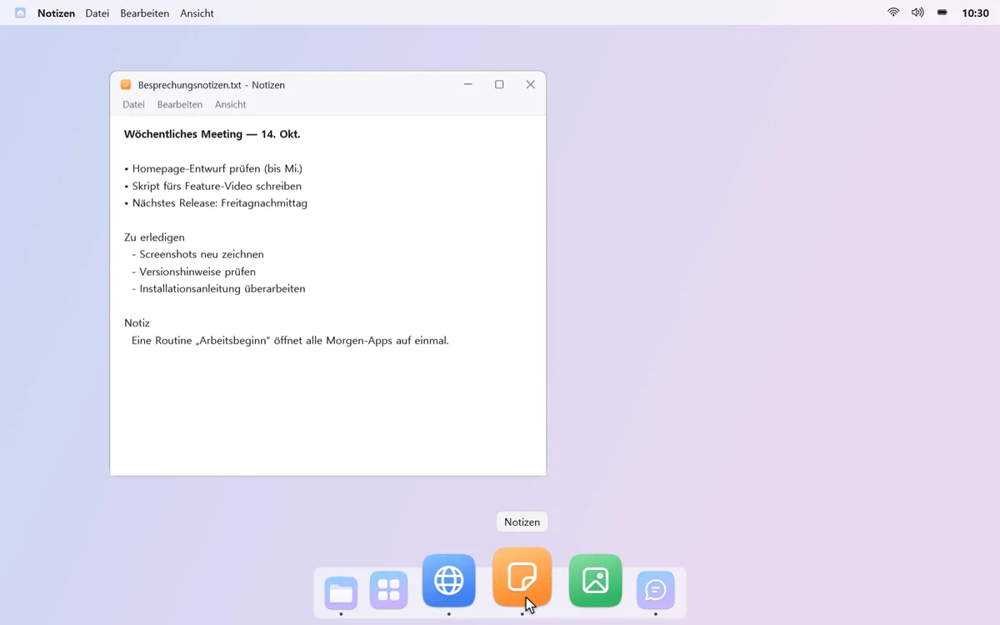
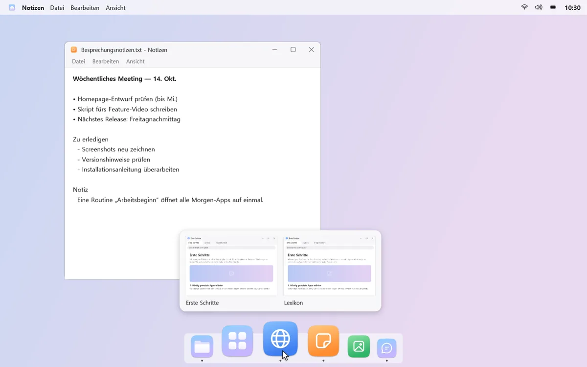

Unten leichter und aufgeräumter
Ersetze die Taskleiste durch ein Dock nur mit deinen Apps, Ordnern und dem Papierkorb. Es bleibt verborgen, bis du den Mauszeiger an den Rand bewegst.
Dein Platz, dein Look
Setz das Dock nach unten, links, rechts oder oben. Ordne Symbole per Ziehen und wähle hell oder dunkel und wie Symbole beim Zeigen wachsen.



Downloads mit einem Klick
Leg einen Ordner ins Dock und klick darauf, um die neuesten Dateien als Raster zu sehen. Ein kleiner Punkt zeigt, wenn etwas Neues ankommt.



Der Papierkorb, gleich da
Zieh eine Datei auf den Papierkorb im Dock, um sie wegzuwerfen. Ein Klick zeigt, was du zuletzt gelöscht hast; per Rechtsklick stellst du es wieder her.


Fenster per Live-Vorschau wählen
Klick auf eine App mit mehreren Fenstern und wähl das gewünschte in der Live-Vorschau. Liegt es auf einem anderen Desktop, bringt dich mongdock dorthin. Du kannst im Dock auch nur die Apps des aktuellen Desktops zeigen.

